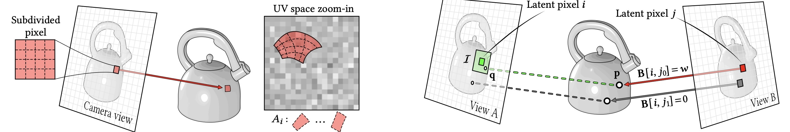
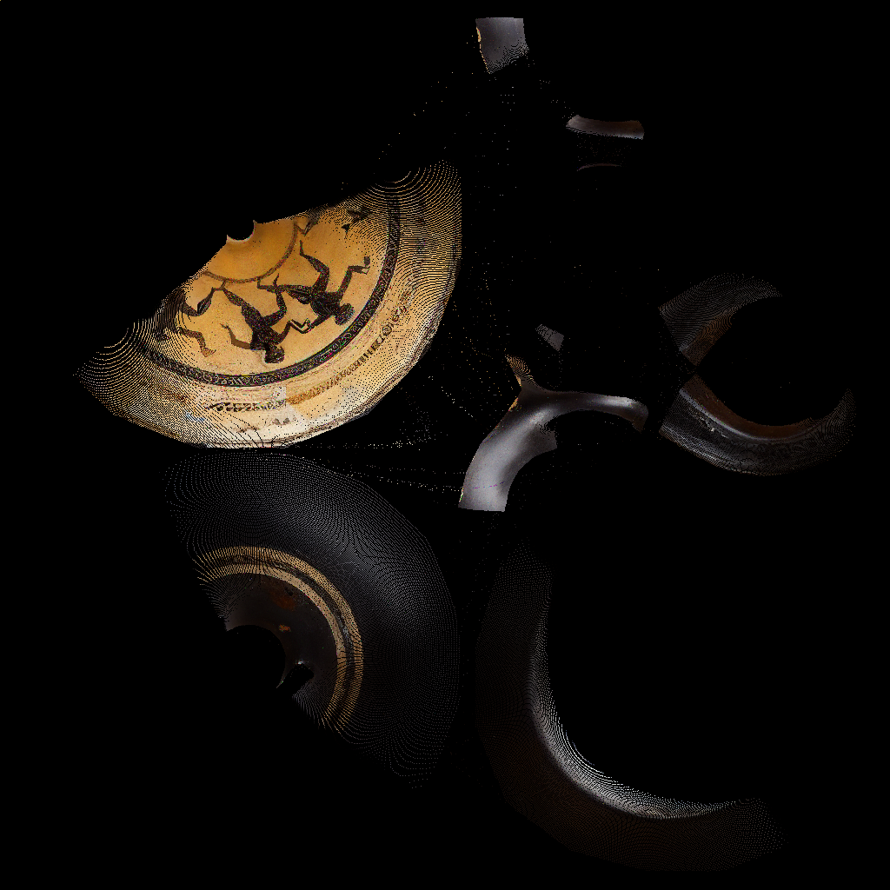

(Left) We embed the input noise within the UV space of the object to obtain a multi-view correlated noise field that could be rendered from any view. (Right) we bias the attentions based on projections in 3D. We project every latent pixel in view B, to the corresponding point in view A to obtain correspondences. These correspondences then are used to bias the self-attention module.
36 view generation
Diffusion images (left) - UV-warped (right)
0

Results
0
Initial
Diffused
Recovered
Relit
Albedo (Init)
Albedo (Rec)
Roughness (Init)
Roughness (Rec)
Normals (Init)
Normals (Rec)
Baseline Comparison
0
Ours (Diffused)
TexPainter (Diffused)
RGB↔X (Diffused)
Ours (Recovered)
Paint-it
DreamMat
TexPainter (Recovered)
Additional hyper-parameters (Figures 21 and 22)
Ablation (Figures 8 and 23)
1
Conditioning images
Baseline: M-view prompting
+ ControlNet tile
+ View-correlated noise
+ Attention bias (full model)
Effect of consistency on inverse rendering (Figure 9)
1
Controlnet tile + normal
+Multi-view prompting
Ours (+attention bias & view correlated noise)